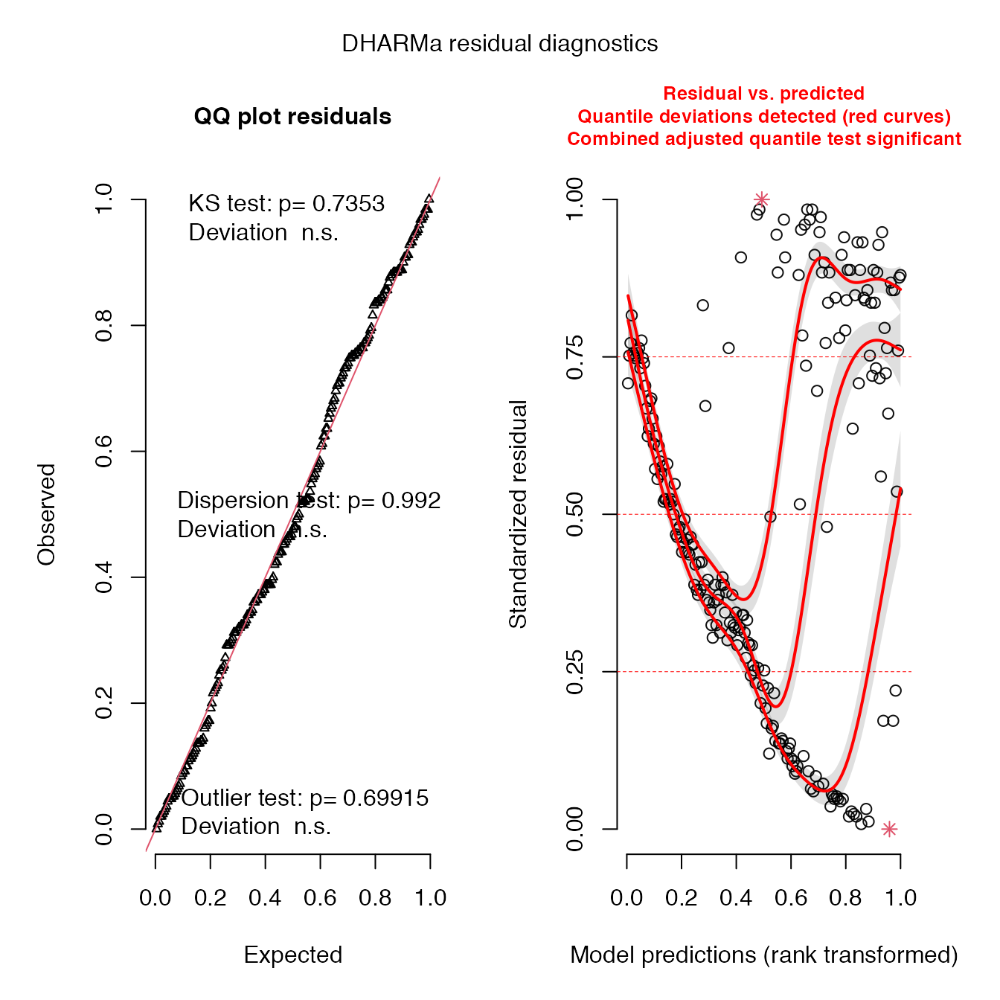
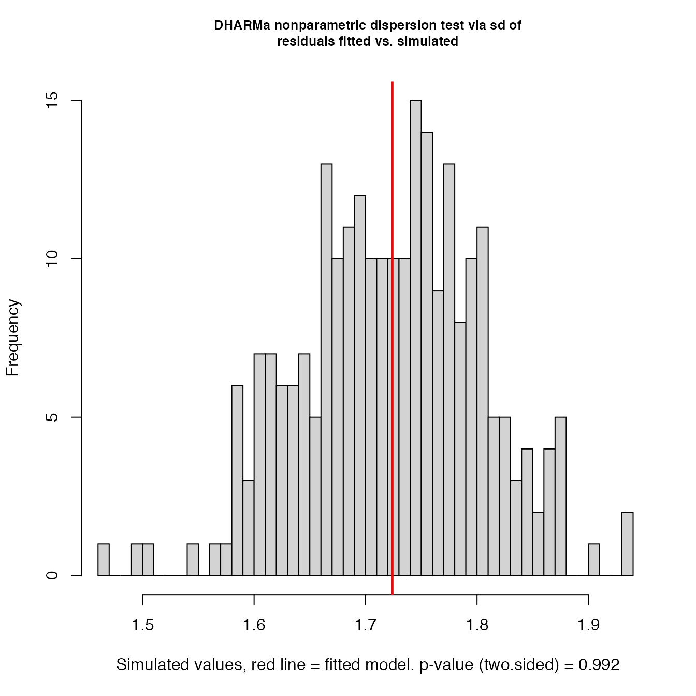
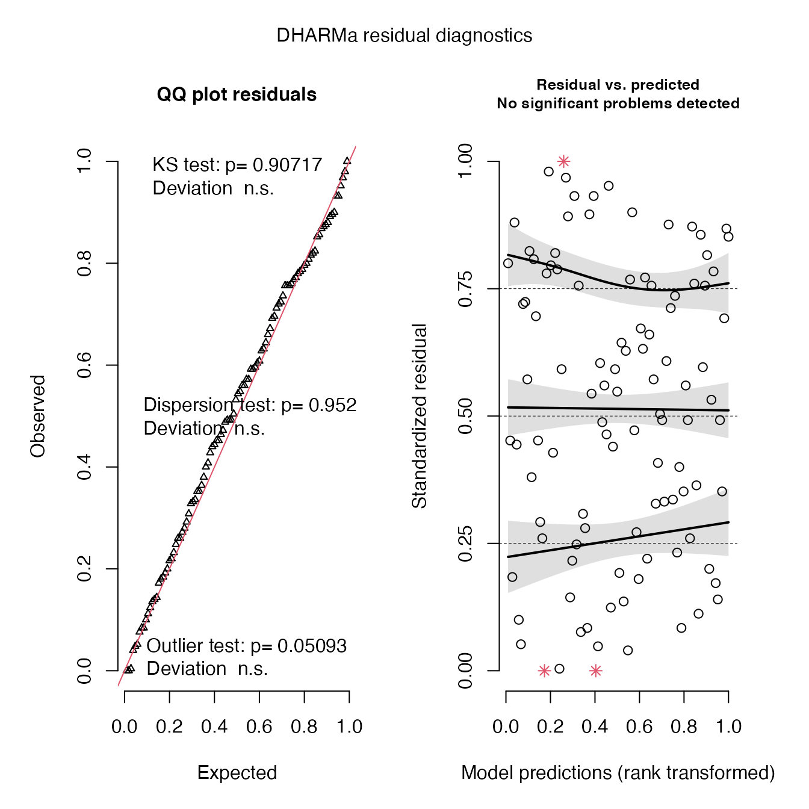
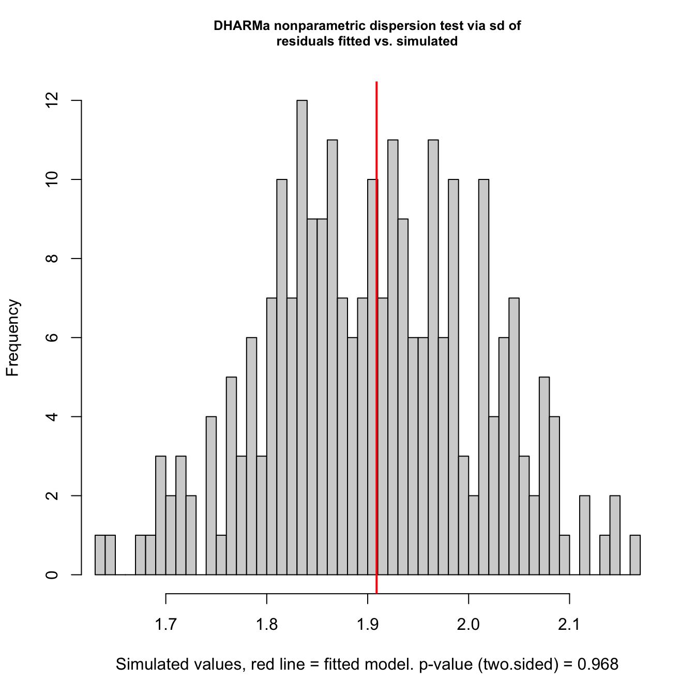

Wine Market Risk of Shock Evaluation
vignette-041-market-plot.RmdBuild and Save Paninvasion Risk to Wine Market Plots
This vignette aims to reproduce the published figure(s) of the relationship between the predicted production of grapes from a risk model built from the alignment of the three risk potentials (impact potential regressed on transport and establishment) to the wine market share by country.
Load and summarize data
Market size data
Next, we read in the countries_market dataset, which contains exports of wine by country. The data are in thousands of USD (1000’s USD), and so we will need to convert to USD as we summarize the data. We summarize the market data by obtaining the mean of \(log_{10}(value+1)\) transformed export values from 2012–2017.
We quickly visualize the distribution of these summarized market_size data via a histogram:
data("countries_market") #dim(countries_market) # http://www.fao.org/faostat/en/#data/TM countries_wine_market <- countries_market %>% filter(Year %in% (2012:2017)) %>% filter(Element == "Export Value") %>% group_by(`Area Code`, Area, Year) %>% dplyr::select(`Area Code`, Area, Year, Value) %>% summarise(market_size = sum(Value)) %>% ungroup(Year) %>% mutate(market_size = log10((market_size*1000)+1)) %>% # units are in 1000s of USD #mutate(market_size = (market_size*1000)) %>% summarise(market_size = mean(market_size)) %>% ungroup() # remove all that are zero countries_wine_market$market_size[countries_wine_market$market_size==0] <- NA #countries_wine_market$market_size <- round(countries_wine_market$market_size) #dim(countries_wine_market) #countries_wine_market qplot((countries_wine_market$market_size))

From here, we add an ID column that matches the other use of this label in other slfrsk vignettes. Then, we isolate ID and market_size for risk analyses.
#add the ID column for joining and plotting later countries_wine_market <- countries_wine_market %>% mutate(ID = Area) %>% dplyr::select(ID, market_size)
Risk summary data
To merge the new market_size dat with our existing countries data, we use left_join() to merge the market and summary data by ID. We then remove the countries from the dataset that already have SLF. Note: we use a modified version of %in% and Negate() to create %notin% for removing countries.
#data("countries_summary_future") data("countries_summary_future_ensemble") countries_summary_future_ensemble <- countries_summary_future_ensemble %>% filter(!ID %in% c("Antarctica", "Monaco", "Norfolk Island", "Spratly Islands")) #remove non-focal countries rems <- c("Akrotiri and Dhekelia" ,"?land" ,"American Samoa" ,"Bouvet Island" ,"British Indian Ocean Territory" ,"Caspian Sea" ,"Christmas Island" ,"Clipperton Island" ,"Cocos Islands" ,"Falkland Islands" ,"Faroe Islands" ,"French Southern Territories" ,"Heard Island and McDonald Islands" ,"Mayotte" ,"Northern Mariana Islands" ,"Paracel Islands" ,"Pitcairn Islands" ,"Saint Pierre and Miquelon" ,"Tokelau" ,"United States Minor Outlying Islands" ,"Wallis and Futuna" ,"United States" ,"Philippines") countries_summary_future_ensemble <- countries_summary_future_ensemble %>% filter(!ID %in% rems) #dim(countries_summary_future) `%notin%` <- Negate(`%in%`) # filter(countries_summary_future, status == "native") countries_risk_market <- countries_summary_future_ensemble %>% left_join(countries_wine_market, by = "ID") %>% filter(ID %notin% c("United States", "China", "India", "Taiwan", "Japan", "South Korea", "Vietnam"))#%>% ######### # - Use this code to check to make sure that each country only has one row # dim(countries_risk_market) # setdiff(countries_risk_market$ID,countries_summary_future$ID) # setdiff(countries_summary_future$ID,countries_risk_market$ID) # table(countries_risk_market$ID)[table(countries_risk_market$ID)>1] # table(countries_summary_future$ID)[table(countries_summary_future$ID)>1]
Build and check model
From here, we now can build (or rebuild, technically, vignette-021-quadrant-plots does this first part as well) the risk model (risk_mod). This model is a linear regression model of log-transformed impact potential on the log-transformed transport and normal establishment potentials. We then evaluated the strength of the correlation between the empirical and predicted impact potential before conducting some diagnostics.
We then rescaled the predicted impact values to be bounded \([1,10]\) to produce initial risk values.
To create the initial shock model (shock_mod) and ultimately obtain a scaled measure of risk of SLF to shock the global wine market, we performed linear regression of the market_size data on risk for countries and conducted diagnostics as for risk_mod. We then evaluated the unscaled and scaled correlations between market_size and risk for countries, resulting in a severity of risk at \(8\) based on a scale of \([1,10]\).
risk_mod <- lm(log10_avg_prod ~ log10_avg_infected_mass + grand_mean_max, data = countries_risk_market) cor.test(countries_risk_market$log10_avg_prod, predict(risk_mod), method = "spearman") #> Warning in cor.test.default(countries_risk_market$log10_avg_prod, #> predict(risk_mod), : Cannot compute exact p-value with ties #> #> Spearman's rank correlation rho #> #> data: countries_risk_market$log10_avg_prod and predict(risk_mod) #> S = 636279, p-value < 2.2e-16 #> alternative hypothesis: true rho is not equal to 0 #> sample estimates: #> rho #> 0.6557349 ## diagnostics # fit is good for the multivariate correlation because there is no dispersion, but do not use this model for prediction (which I do not know why you would) simulationOutput_r <- simulateResiduals(fittedModel = risk_mod, plot = T)

testDispersion(simulationOutput_r)

#>
#> DHARMa nonparametric dispersion test via sd of residuals fitted vs.
#> simulated
#>
#> data: simulationOutput
#> ratioObsSim = 1.001, p-value = 0.992
#> alternative hypothesis: two.sided
summary(risk_mod)
#>
#> Call:
#> lm(formula = log10_avg_prod ~ log10_avg_infected_mass + grand_mean_max,
#> data = countries_risk_market)
#>
#> Residuals:
#> Min 1Q Median 3Q Max
#> -4.0652 -1.1563 -0.1541 1.3108 4.8646
#>
#> Coefficients:
#> Estimate Std. Error t value Pr(>|t|)
#> (Intercept) -1.11406 0.27018 -4.123 5.29e-05 ***
#> log10_avg_infected_mass 0.36901 0.06819 5.411 1.63e-07 ***
#> grand_mean_max 3.79388 0.43887 8.645 1.13e-15 ***
#> ---
#> Signif. codes: 0 '***' 0.001 '**' 0.01 '*' 0.05 '.' 0.1 ' ' 1
#>
#> Residual standard error: 1.806 on 220 degrees of freedom
#> Multiple R-squared: 0.4331, Adjusted R-squared: 0.4279
#> F-statistic: 84.03 on 2 and 220 DF, p-value: < 2.2e-16
countries_risk_market <- countries_risk_market %>%
mutate(risk = scales::rescale(predict(risk_mod), to = c(1,10)))
shock_mod <- lm(market_size ~ risk, data = countries_risk_market)
summary(shock_mod)
#>
#> Call:
#> lm(formula = market_size ~ risk, data = countries_risk_market)
#>
#> Residuals:
#> Min 1Q Median 3Q Max
#> -5.0037 -1.1798 0.2187 1.4528 4.1583
#>
#> Coefficients:
#> Estimate Std. Error t value Pr(>|t|)
#> (Intercept) 2.02950 0.39159 5.183 6.08e-07 ***
#> risk 0.54896 0.06251 8.782 1.57e-15 ***
#> ---
#> Signif. codes: 0 '***' 0.001 '**' 0.01 '*' 0.05 '.' 0.1 ' ' 1
#>
#> Residual standard error: 1.914 on 172 degrees of freedom
#> (49 observations deleted due to missingness)
#> Multiple R-squared: 0.3096, Adjusted R-squared: 0.3056
#> F-statistic: 77.13 on 1 and 172 DF, p-value: 1.568e-15
## diagnostics
# risk estimate model fit is good and no major issues in heteroskedasticity. But I am not certain why you want this model anyways, a correlation is better because it is easily scaled betwee 1-10
simulationOutput <- simulateResiduals(fittedModel = shock_mod, plot = T) 
testDispersion(simulationOutput)

#>
#> DHARMa nonparametric dispersion test via sd of residuals fitted vs.
#> simulated
#>
#> data: simulationOutput
#> ratioObsSim = 1.0016, p-value = 0.992
#> alternative hypothesis: two.sided
cor.test(countries_risk_market$market_size, countries_risk_market$risk)
#>
#> Pearson's product-moment correlation
#>
#> data: countries_risk_market$market_size and countries_risk_market$risk
#> t = 8.7824, df = 172, p-value = 1.568e-15
#> alternative hypothesis: true correlation is not equal to 0
#> 95 percent confidence interval:
#> 0.4444373 0.6512759
#> sample estimates:
#> cor
#> 0.5564175
(shock_cor <- cor(countries_risk_market$market_size,
countries_risk_market$risk,
use = "complete.obs") %>%
scales::rescale(to = c(1,10), from = c(-1,1)) %>%
round())
#> [1] 8Plotting risk vs market scatter
With the predicted risk, we were able plot the scaled risk and market_size, resulting in the published risk of SLF to shock the global wine market plot.
#countries_risk_market %>% # mutate(risk_scale = scale(risk), market_size_scale = scale(market_size)) %>% #mutate(risk_scale_ticks = ) # ggplot(mapping = aes(x = risk_scale, # y = market_size_scale, fill = wine), color = "black") + # geom_point(pch = 21) remove(market_scatter) market_scatter <- countries_risk_market %>% ggplot(mapping = aes(x = (risk), y = (market_size), size = avg_wine, fill = wine) ) + geom_abline(slope = 1, intercept = 0, lty = 2) + geom_abline(slope = 1, intercept = 5, lty = 2) + geom_abline(slope = 1, intercept = -5, lty = 2) + ggtitle(label = paste('Spotted Lanternfly Paninvasion Risk Severity =', shock_cor,'of 10 (P<0.005)')) + geom_point(pch = 21) + scale_x_continuous( name = substitute(expr = paste('Spotted Lanternfly (',italic("Lycorma delicatula"),') Invasion Risk')), breaks = 1:10, limits = c(1,10) ) + scale_y_continuous("Wine Export Market Size, log10 USD", breaks = seq(1,10,1), limits = c(1,10) ) + scale_size_continuous( #values = c(0,), name = "Wine Production",# "Wine Impact Potential", # labels = c("0 t", "1.0M t", "2.0M t", "3.0M t", "4.0M t") labels = c("0 t", "1E6 t", "2E6 t", "3E6 t", "4E6 t") ) + # scale_fill_discrete(guide = FALSE) + scale_fill_manual( values = c("no" = "#ffffff", "yes" = "#C77CFF"), name = "",# "Wine Impact Potential", labels = c("wine producer", "") ) + theme( panel.grid.major = element_line(colour = "#f0f0f0"), panel.grid.minor = element_blank(), #panel.grid.major = element_blank(), #panel.border = element_rect(colour = "black", fill=NA, size=1), axis.line = element_line(colour = "black"), #legend.position = c(0.7, 0.25), #legend.position = "bottom", panel.background = element_blank(), plot.background = element_blank(), #legend.background = element_rect(colour = 'black', # fill = 'white', # linetype='solid'), axis.text = element_text(size = rel(1)), axis.title.x = element_text(hjust = .4), axis.title.y = element_text(hjust = .35), legend.title = element_text(face = "plain"), legend.key.size = unit(0.2, "cm"), legend.key = element_blank(), #plot.margin = unit(c(hh, -5, hh, hh), units = "line"), #axis.title = element_text(size = rel(1.3)) ) + geom_text_repel(#data = select(countries_risk_market, aes(#x = x_to_plot, #y = y_to_plot, label = ID), #label = countries_risk_market$ID, min.segment.length = 0, #direction = "x", #nudge_y = nudge.y, #nudge_x = nudge.x show.legend = FALSE) #+ #guides( # fill = TRUE # ) #, # color = guide_legend( # order = 3, # override.aes = list(alpha = 1) # ), # size = guide_legend( # Adjust size to edit legend grape production # order = 2, # circles. # override.aes = list(size = c(1,3,6), alpha = 1) # ) # ) market_scatter

Save plot output
Here, you can set to save the scatter plot to /vignettes as a .pdf file by setting the if from FALSE to TRUE, as in the other vignettes. We also have a version of the data saved for the Google Earth Engine App data cleaning vignette.
if(FALSE){ pdf(file.path(here::here(), "vignettes", paste0("market_scatter_v3_0.pdf")), width = 8.5*.95, height = 11*.95) market_scatter dev.off() countries_risk <- countries_risk_market %>% dplyr::select(ID, market_size, risk) save(countries_risk, file = file.path(here::here(), "data", "countries_risk.rda")) }